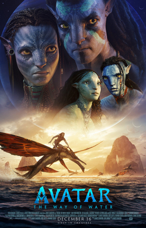

🎬 CineManía 🎬 |
| Inicio | Cartelera | Próximos Estrenos | Clásicos | Contáctanos | Registro | Iniciar Sesión | Encuesta |
En CineManía encontrarás toda la información sobre el mundo del cine: desde la cartelera actual hasta los próximos estrenos que llegarán a la pantalla grande. Nuestro portal está diseñado para que vivas la experiencia del cine desde casa, con reseñas, sinopsis, tráilers e información de tus actores favoritos.
Además, podrás registrarte para recibir notificaciones de tus películas favoritas, participar en encuestas y enterarte antes que nadie de los próximos lanzamientos.
| Título | Género | Año | Imagen |
|---|---|---|---|
| Oppenheimer | Drama / Historia | 2023 | |
| Avatar: El Camino del Agua | Ciencia Ficción | 2022 |  |
| Spider-Man: Across the Spider-Verse | Animación / Acción | 2023 |
© 2025 CineManía | Todos los derechos reservados